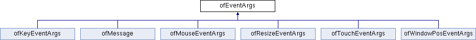

This documentation is automatically generated from the openFrameworks source code using doxygen and refers to the most recent release, version 0.11.1.
ofEventArgs Class Reference
#include <ofEvents.h>
Inheritance diagram for ofEventArgs:

The documentation for this class was generated from the following file:
- /Users/anotherenergy/oF/libs/openFrameworks/events/ofEvents.h